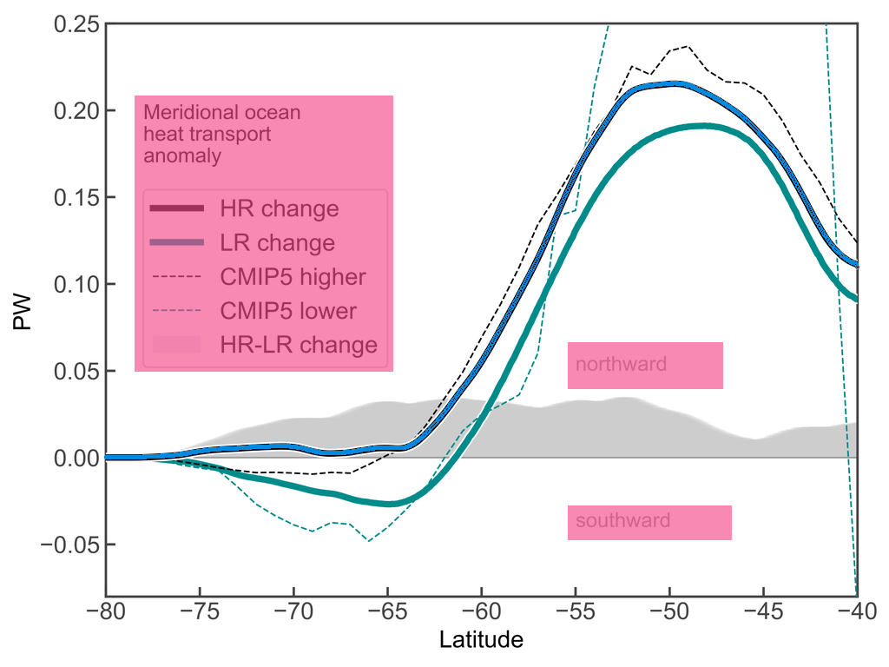

遮罩精确到像素
矩形、多边形、按系列排除。图例行之间仍然可见的真实数据，值得被保留。
SCIENTIFIC FIGURES → REUSABLE DATA
从论文图片到可复核的 CSV。
基于 THU Digitizer，精细排除图例干扰，
保留真正可见的每一份证据。
THU extraction engine ＋ GISWLH legend-aware extensions

SMALL MASKS. COMPLETE EVIDENCE.
矩形、多边形、按系列排除。图例行之间仍然可见的真实数据，值得被保留。
图例覆盖的曲线保持缺失。原图不改写，原始值不从参考数据中补入。
原图、遮罩、CSV、覆盖图、重绘图和独立评分，一起交付，一键复现。
THE EVIDENCE GALLERY
MEASURED, NOT PROMISED
开发案例全部公开，失败阶段与方法边界也写入文档。这些分数衡量已校准图表的数字化效果，不代表任意论文都能自动达到同样精度。
阅读测试协议 ↗在固定采样点上比较，漏提取也算错。报告覆盖率、误差和遮挡区是否出现伪值。
一对一匹配，同时惩罚漏点与多提取点。密集重叠图仍如实保留不可分辨的缺失点。
单独列出色标饱和区间，以及两位小数参考值的舍入误差。原始严格分数与舍入感知分数同时展示，不计入首页宏平均。
YOUR NEXT FIGURE, READY FOR ANALYSIS
一个技能 · 一个命令行 · 完整的提取证据
git clone https://github.com/GISWLH/digitizer.git